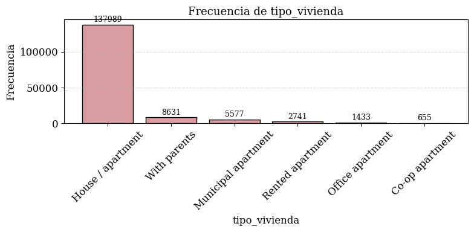
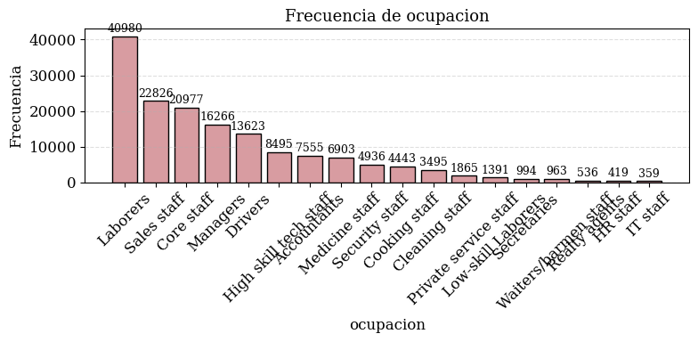
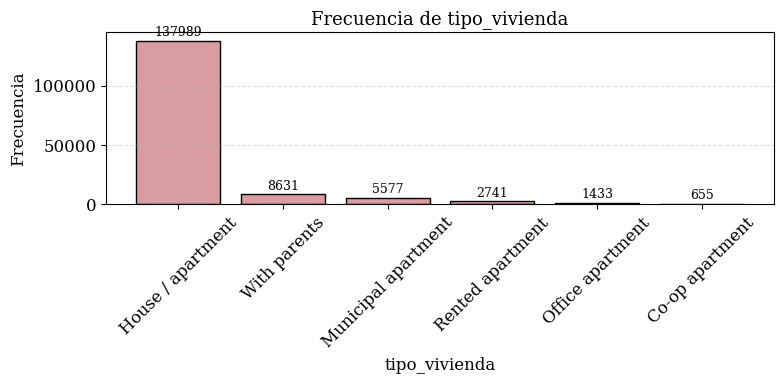
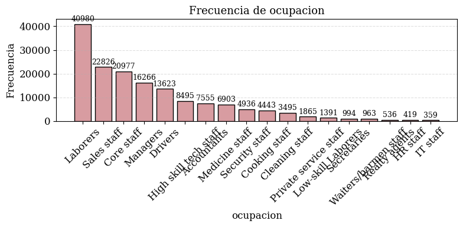

Análisis Exploratorio (EDA)#
%history -n 1-1000
1: %history -n 1-1000
2: %history -f C:\Users\DELL\Desktop\Aprendizaje_de_Maquina\jbook_Proyecto_Final_Clasificacion\Template_Jupyter_Book/historial_sesion.py
3:
import warnings
import numpy as np
import pandas as pd
import seaborn as sns
import matplotlib as mpl
import matplotlib.pyplot as plt
warnings.filterwarnings("ignore")
import matplotlib.colors as mcolors
from statsmodels.tools.tools import add_constant
from sklearn.preprocessing import StandardScaler
from sklearn.model_selection import train_test_split
from statsmodels.stats.outliers_influence import variance_inflation_factor
4:
# Ruta local a la carpeta donde están los archivos en Google Colab
ruta = r"C:\Users\DELL\Desktop\Aprendizaje_de_Maquina\Datos Originales"
# Cargar archivos CSV
train = pd.read_csv(f'{ruta}/application_train.csv')
test = pd.read_csv(f'{ruta}/application_test.csv')
bureau = pd.read_csv(f'{ruta}/bureau.csv')
bureau_balance = pd.read_csv(f'{ruta}/bureau_balance.csv')
previous_app = pd.read_csv(f'{ruta}/previous_application.csv')
pos_cash = pd.read_csv(f'{ruta}/POS_CASH_balance.csv')
credit_card = pd.read_csv(f'{ruta}/credit_card_balance.csv')
insta_payments = pd.read_csv(f'{ruta}/installments_payments.csv')
5: %history -n 1-1000
%history -f C:\Users\DELL\Desktop\Aprendizaje_de_Maquina\jbook_Proyecto_Final_Clasificacion\Template_Jupyter_Book/historial_sesion.py
1. Carga de Datos y Librerías#
1.1. Importar Librerías#
import warnings
import numpy as np
import pandas as pd
import seaborn as sns
import matplotlib as mpl
import matplotlib.pyplot as plt
warnings.filterwarnings("ignore")
import matplotlib.colors as mcolors
from statsmodels.tools.tools import add_constant
from sklearn.preprocessing import StandardScaler
from sklearn.model_selection import train_test_split
from statsmodels.stats.outliers_influence import variance_inflation_factor
1.2. Cargar Datos desde Archivos CSV#
# Ruta local a la carpeta donde están los archivos en Google Colab
ruta = r"C:\Users\DELL\Desktop\Aprendizaje_de_Maquina\home-credit-default-risk"
# Cargar archivos CSV
train = pd.read_csv(f'{ruta}/application_train.csv')
test = pd.read_csv(f'{ruta}/application_test.csv')
bureau = pd.read_csv(f'{ruta}/bureau.csv')
bureau_balance = pd.read_csv(f'{ruta}/bureau_balance.csv')
previous_app = pd.read_csv(f'{ruta}/previous_application.csv')
pos_cash = pd.read_csv(f'{ruta}/POS_CASH_balance.csv')
credit_card = pd.read_csv(f'{ruta}/credit_card_balance.csv')
insta_payments = pd.read_csv(f'{ruta}/installments_payments.csv')
1.3. Agregación de Datos#
# ================================
# 1. bureau
# ================================
bureau_agg = bureau.groupby("SK_ID_CURR").agg({
"SK_ID_BUREAU": "count",
"CREDIT_ACTIVE": "nunique",
"AMT_CREDIT_SUM": "sum"
}).reset_index()
bureau_agg.columns = ["SK_ID_CURR", "bureau_count", "credit_active_unique", "total_credit_sum"]
train = train.merge(bureau_agg, on="SK_ID_CURR", how="left")
test = test.merge(bureau_agg, on="SK_ID_CURR", how="left")
# ================================
# 2. previous_application
# ================================
previous_app_agg = previous_app.groupby("SK_ID_CURR").agg({
"SK_ID_PREV": "count",
"AMT_APPLICATION": "mean",
"AMT_CREDIT": "sum"
}).reset_index()
previous_app_agg.columns = ["SK_ID_CURR", "prev_app_count", "avg_amt_app", "total_amt_credit"]
train = train.merge(previous_app_agg, on="SK_ID_CURR", how="left")
test = test.merge(previous_app_agg, on="SK_ID_CURR", how="left")
# ================================
# 3. POS_CASH_balance
# ================================
pos_cash_agg = pos_cash.groupby("SK_ID_CURR").agg({
"SK_ID_PREV": "count",
"MONTHS_BALANCE": "mean"
}).reset_index()
pos_cash_agg.columns = ["SK_ID_CURR", "pos_cash_count", "avg_months_balance"]
train = train.merge(pos_cash_agg, on="SK_ID_CURR", how="left")
test = test.merge(pos_cash_agg, on="SK_ID_CURR", how="left")
# ================================
# 4. credit_card_balance
# ================================
credit_card_agg = credit_card.groupby("SK_ID_CURR").agg({
"SK_ID_PREV": "count",
"AMT_BALANCE": "mean"
}).reset_index()
credit_card_agg.columns = ["SK_ID_CURR", "credit_card_count", "avg_credit_balance"]
train = train.merge(credit_card_agg, on="SK_ID_CURR", how="left")
test = test.merge(credit_card_agg, on="SK_ID_CURR", how="left")
# ================================
# 5. installments_payments
# ================================
insta_payments_agg = insta_payments.groupby("SK_ID_CURR").agg({
"SK_ID_PREV": "count",
"AMT_PAYMENT": "sum",
"DAYS_ENTRY_PAYMENT": "mean"
}).reset_index()
insta_payments_agg.columns = ["SK_ID_CURR", "installments_count", "total_amt_payment", "avg_days_entry_payment"]
train = train.merge(insta_payments_agg, on="SK_ID_CURR", how="left")
test = test.merge(insta_payments_agg, on="SK_ID_CURR", how="left")
# ================================
# 6. Combinar train y test
# ================================
train["dataset"] = "train"
test["dataset"] = "test"
test["TARGET"] = np.nan
test = test[train.columns] # Asegurar mismo orden de columnas
full_data = pd.concat([train, test], axis=0).reset_index(drop=True)
print("Datos combinados correctamente. Dimensiones:", full_data.shape)
Datos combinados correctamente. Dimensiones: (356255, 136)
1.4. Guardar Base de Datos Consolidada#
# Guardar el dataset consolidado como CSV
full_data.to_csv('/content/credit_risk_consolidado.csv', index=False)
print("Archivo guardado exitosamente como 'credit_risk_consolidado.csv'")
Archivo guardado exitosamente como 'credit_risk_consolidado.csv'
2. Preprocesamiento de Datos#
2.1. Cargar Base de Datos Consolidada#
# Cargar el archivo consolidado desde la ruta
df = pd.read_csv('/content/credit_risk_consolidado.csv')
# Verificar que se cargó correctamente
print("Dataset cargado correctamente. Dimensiones:", df.shape)
Dataset cargado correctamente. Dimensiones: (356255, 136)
2.2. Identificación de Tipos de Variables#
def build_my_info_table(df):
info = []
for col in df.columns:
data = df[col]
tipo = data.dtype
nulos = data.isnull().sum()
nulos_pct = 100 * nulos / len(df)
nunique = data.nunique()
valores_unicos = data.unique() if nunique <= 10 else 'Más de 10 valores únicos'
moda = data.mode().iloc[0] if not data.mode().empty else None
moda_freq = data.value_counts().iloc[0] if not data.value_counts().empty else None
moda_pct = 100 * moda_freq / len(df) if moda_freq else None
info.append({
'columna': col,
'dtype': tipo,
'nulos (#)': nulos,
'nulos (%)': round(nulos_pct, 2),
'nunique': nunique,
'unique': valores_unicos,
})
return pd.DataFrame(info)
# Ejecutar la función sobre el DataFrame cargado
info_table = build_my_info_table(df)
# Mostrar la tabla con información descriptiva por columna
pd.set_option('display.max_rows', None) # Para mostrar todas las filas si hay muchas variables
print("Dimensiones:", df.shape)
info_table.head(5)
Dimensiones: (356255, 136)
| columna | dtype | nulos (#) | nulos (%) | nunique | unique | |
|---|---|---|---|---|---|---|
| 0 | SK_ID_CURR | int64 | 0 | 0.00 | 356255 | Más de 10 valores únicos |
| 1 | TARGET | float64 | 48744 | 13.68 | 2 | [1.0, 0.0, nan] |
| 2 | NAME_CONTRACT_TYPE | object | 0 | 0.00 | 2 | [Cash loans, Revolving loans] |
| 3 | CODE_GENDER | object | 0 | 0.00 | 3 | [M, F, XNA] |
| 4 | FLAG_OWN_CAR | object | 0 | 0.00 | 2 | [N, Y] |
# Cambiar estilo global de la fuente a una más formal
mpl.rcParams['font.family'] = 'serif' # Usa fuente tipo LaTeX
mpl.rcParams['font.serif'] = ['Computer Modern', 'DejaVu Serif', 'Times New Roman', 'STIX']
# También puedes controlar tamaño por defecto si quieres
mpl.rcParams['font.size'] = 12
2.3. Selección de características#
2.3.1. Eliminar Variable ID#
# Eliminar la columna 'SK_ID_CURR'
df = df.drop(columns=['SK_ID_CURR'])
# Verificar dimensiones después de eliminar
print("'SK_ID_CURR' eliminada. Nueva dimensión:", df.shape)
'SK_ID_CURR' eliminada. Nueva dimensión: (356255, 135)
2.3.2. Eliminar Valores Nulos de la Variable Objetivo#
# Mostrar distribución original (con nulos)
print(" Distribución original de la variable TARGET (incluye nulos):")
print(df['TARGET'].value_counts(dropna=False))
print("\n Distribución porcentual original (incluye nulos):")
print((df['TARGET'].value_counts(normalize=True, dropna=False) * 100).round(2))
# Eliminar nulos
df = df.dropna(subset=['TARGET'])
# Convertir a entero
df['TARGET'] = df['TARGET'].astype(int)
# Mostrar distribución después de limpieza
print("\n Distribución de TARGET después de eliminar nulos y convertir a entero:")
print(df['TARGET'].value_counts())
print("\n Distribución porcentual después de limpieza:")
print((df['TARGET'].value_counts(normalize=True) * 100).round(2))
# Mostrar dimensiones finales
print(f"\n Dimensiones del DataFrame final: {df.shape}")
Distribución original de la variable TARGET (incluye nulos):
TARGET
0.0 282686
NaN 48744
1.0 24825
Name: count, dtype: int64
Distribución porcentual original (incluye nulos):
TARGET
0.0 79.35
NaN 13.68
1.0 6.97
Name: proportion, dtype: float64
Distribución de TARGET después de eliminar nulos y convertir a entero:
TARGET
0 282686
1 24825
Name: count, dtype: int64
Distribución porcentual después de limpieza:
TARGET
0 91.93
1 8.07
Name: proportion, dtype: float64
Dimensiones del DataFrame final: (307511, 135)
# Eliminar filas donde 'TARGET' es nulo
df = df[df['TARGET'].notnull()]
# Confirmar el cambio
print(f"Nuevo tamaño del DataFrame: {df.shape}")
print("Distribución de la variable TARGET:")
print(df['TARGET'].value_counts())
print("\nDistribución porcentual:")
print((df['TARGET'].value_counts(normalize=True) * 100).round(2))
Nuevo tamaño del DataFrame: (307511, 135)
Distribución de la variable TARGET:
TARGET
0 282686
1 24825
Name: count, dtype: int64
Distribución porcentual:
TARGET
0 91.93
1 8.07
Name: proportion, dtype: float64
2.3.3. Eliminar columnas con más del 40% de valores nulos.#
# Filtrar casos donde TARGET == 1
df_target_1 = df[df['TARGET'] == 1]
# Mostrar las dimensiones
print("Dimensiones del subconjunto con TARGET == 1:", df_target_1.shape)
Dimensiones del subconjunto con TARGET == 1: (24825, 135)
# Preparar los datos
na_counts = df_target_1.isna().sum()
na_pct = 100 * na_counts / len(df_target_1)
na_df = pd.DataFrame({
'columna': na_pct.index,
'nulos': na_pct.values
})
na_df = na_df[na_df['nulos'] >= 20].sort_values(by='nulos', ascending=True).reset_index(drop=True)
# Crear el gráfico
fig, ax = plt.subplots(figsize=(12, 14))
cmap = mcolors.LinearSegmentedColormap.from_list("vino_pastel", ["#feb6e6", "#800020"])
norm = plt.Normalize(0, 100)
for i, (col, val, nul) in enumerate(zip(na_df['columna'], na_df['nulos'], na_df['nulos'])):
ax.barh(i, val, color=cmap(norm(val)), height=0.8, edgecolor='black')
ax.text(val + 1, i, f'{val:.1f}%', va='center', ha='left', fontsize=10)
ax.set_yticks(np.arange(len(na_df)))
ax.set_yticklabels(na_df['columna'], fontsize=11)
ax.set_xlim(0, 100)
ax.set_xlabel("Porcentaje de Nulos", fontsize=13)
ax.set_title("Variables con más del 20% de valores nulos", fontsize=16, fontweight='bold')
ax.grid(True, axis='x', linestyle='--', alpha=0.3)
plt.tight_layout()
plt.show()
# 1. Filtrar columnas con más del 40% de nulos
columnas_nulos_40 = na_pct[na_pct > 40].index.tolist()
# 2. Eliminar esas columnas del DataFrame completo df
df = df.drop(columns=columnas_nulos_40, errors='ignore')
# 3. Confirmar resultado
print(f"Columnas eliminadas por tener más del 40% de nulos (en TARGET==1): {len(columnas_nulos_40)}")
print(f"Dimensiones actualizadas de df: {df.shape}")
Columnas eliminadas por tener más del 40% de nulos (en TARGET==1): 51
Dimensiones actualizadas de df: (307511, 84)
2.3.4. Eliminar variables con una sola categoría o donde una categoría domina >90%.#
# Paso 1: Identificar columnas con una categoría dominante >90% (excluyendo NA)
umbral = 0.90
columnas_dominantes = {}
for col in df.columns:
valores = df[col].dropna().value_counts(normalize=True)
if len(valores) == 1:
columnas_dominantes[col] = 1.0
elif valores.iloc[0] > umbral:
columnas_dominantes[col] = valores.iloc[0]
# Convertir a DataFrame ordenado
dom_df = pd.DataFrame({
'columna': list(columnas_dominantes.keys()),
'proporcion': list(columnas_dominantes.values())
}).sort_values(by='proporcion', ascending=True).reset_index(drop=True)
# Paso 2: Graficar con color fijo
fig, ax = plt.subplots(figsize=(12, 8))
color_fijo = "#9B4F5F" # Color sólido vino oscuro
for i, (col, val) in enumerate(zip(dom_df['columna'], dom_df['proporcion'])):
ax.barh(i, val, color=color_fijo, height=0.8, edgecolor='black')
ax.text(val + 0.01, i, f'{val:.1%}', va='center', ha='left', fontsize=10)
# Estética del gráfico
ax.set_yticks(np.arange(len(dom_df)))
ax.set_yticklabels(dom_df['columna'], fontsize=11)
ax.set_xlim(0, 1)
ax.set_xlabel("Proporción de la categoría más frecuente", fontsize=13)
ax.set_title("Variables con una sola categoría o categoría dominante >90%", fontsize=16, fontweight='bold')
ax.grid(True, axis='x', linestyle='--', alpha=0.3)
plt.tight_layout()
plt.show()
# Inicializar lista para guardar columnas a eliminar
columnas_dominantes = []
# Iterar sobre las columnas del DataFrame
for col in df.columns:
# Excluir NaNs y contar frecuencia de valores
valores = df[col].dropna().value_counts(normalize=True)
# Revisar condiciones:
if len(valores) == 1:
columnas_dominantes.append(col) # Solo una categoría (sin contar NaNs)
elif valores.iloc[0] > 0.999:
columnas_dominantes.append(col) # Una categoría domina más del 99.9%
# Mostrar resultado
print(f"Columnas a eliminar por tener una sola categoría dominante (>99%): {len(columnas_dominantes)}")
print(columnas_dominantes)
# Eliminar del DataFrame
df = df.drop(columns=columnas_dominantes, errors='ignore')
print(f"Nuevas dimensiones del DataFrame: {df.shape}")
Columnas a eliminar por tener una sola categoría dominante (>99%): 11
['FLAG_MOBIL', 'FLAG_DOCUMENT_2', 'FLAG_DOCUMENT_4', 'FLAG_DOCUMENT_7', 'FLAG_DOCUMENT_10', 'FLAG_DOCUMENT_12', 'FLAG_DOCUMENT_17', 'FLAG_DOCUMENT_19', 'FLAG_DOCUMENT_20', 'FLAG_DOCUMENT_21', 'dataset']
Nuevas dimensiones del DataFrame: (307511, 73)
2.3.5. Alta correlación con otras variables#
# 1. Seleccionar solo columnas numéricas
df_numericas = df.select_dtypes(include=['float64', 'int64'])
# 2. Calcular la matriz de correlación
matriz_correlacion = df_numericas.corr()
# 3. Definir paleta personalizada estilo vino pastel
cmap_vino_pastel = sns.color_palette(["#F8E8EC", "#C08081", "#800020"], as_cmap=True)
# 4. Visualizar con heatmap
plt.figure(figsize=(16, 12))
sns.heatmap(
matriz_correlacion,
cmap=cmap_vino_pastel,
annot=False, # True si quieres ver los valores
fmt=".2f",
linewidths=0.5,
cbar_kws={"shrink": 0.8}
)
plt.title("Matriz de Correlación entre Variables Numéricas", fontsize=16)
plt.tight_layout()
plt.show()
# 1. Seleccionar solo variables numéricas (sin nulos)
df_numericas = df.select_dtypes(include=['int64', 'float64']).dropna()
# 2. Agregar constante para intercepto (requerido por VIF)
X = add_constant(df_numericas)
# 3. Calcular VIF para cada variable
vif_df = pd.DataFrame()
vif_df["Variable"] = X.columns
vif_df["VIF"] = [variance_inflation_factor(X.values, i) for i in range(X.shape[1])]
# 4. Ordenar por VIF descendente
vif_df = vif_df.sort_values("VIF", ascending=False)
# 5. Mostrar
print(vif_df)
Variable VIF
0 const 18677.595654
11 FLAG_EMP_PHONE 2485.373140
8 DAYS_EMPLOYED 2465.928426
30 OBS_60_CNT_SOCIAL_CIRCLE 345.347579
28 OBS_30_CNT_SOCIAL_CIRCLE 344.817406
5 AMT_GOODS_PRICE 41.513172
3 AMT_CREDIT 40.817717
17 REGION_RATING_CLIENT 11.016437
18 REGION_RATING_CLIENT_W_CITY 10.873466
21 REG_REGION_NOT_WORK_REGION 9.319682
24 REG_CITY_NOT_WORK_CITY 7.703256
22 LIVE_REGION_NOT_WORK_REGION 7.676728
60 avg_days_entry_payment 6.795705
57 avg_months_balance 6.730270
25 LIVE_CITY_NOT_WORK_CITY 6.235131
1 CNT_CHILDREN 4.848335
16 CNT_FAM_MEMBERS 4.719836
55 total_amt_credit 4.387030
29 DEF_30_CNT_SOCIAL_CIRCLE 4.073873
53 prev_app_count 4.019722
31 DEF_60_CNT_SOCIAL_CIRCLE 3.869866
33 FLAG_DOCUMENT_3 2.917104
59 total_amt_payment 2.851151
4 AMT_ANNUITY 2.777689
56 pos_cash_count 2.520532
54 avg_amt_app 2.503609
35 FLAG_DOCUMENT_6 2.461033
23 REG_CITY_NOT_LIVE_CITY 2.423774
20 REG_REGION_NOT_LIVE_REGION 2.360393
58 installments_count 2.299075
7 DAYS_BIRTH 2.194661
36 FLAG_DOCUMENT_8 1.955049
49 AMT_REQ_CREDIT_BUREAU_YEAR 1.639212
50 bureau_count 1.545788
6 REGION_POPULATION_RELATIVE 1.408811
51 credit_active_unique 1.331067
32 DAYS_LAST_PHONE_CHANGE 1.259054
12 FLAG_WORK_PHONE 1.240348
52 total_credit_sum 1.202146
26 EXT_SOURCE_2 1.189119
34 FLAG_DOCUMENT_5 1.182795
27 EXT_SOURCE_3 1.182182
9 DAYS_REGISTRATION 1.160496
14 FLAG_PHONE 1.158867
10 DAYS_ID_PUBLISH 1.143674
19 HOUR_APPR_PROCESS_START 1.112816
45 AMT_REQ_CREDIT_BUREAU_DAY 1.107806
44 AMT_REQ_CREDIT_BUREAU_HOUR 1.065515
2 AMT_INCOME_TOTAL 1.047994
37 FLAG_DOCUMENT_9 1.047669
46 AMT_REQ_CREDIT_BUREAU_WEEK 1.046095
48 AMT_REQ_CREDIT_BUREAU_QRT 1.041104
47 AMT_REQ_CREDIT_BUREAU_MON 1.039553
15 FLAG_EMAIL 1.036678
38 FLAG_DOCUMENT_11 1.029616
42 FLAG_DOCUMENT_16 1.010452
39 FLAG_DOCUMENT_13 1.007159
43 FLAG_DOCUMENT_18 1.006660
40 FLAG_DOCUMENT_14 1.003581
41 FLAG_DOCUMENT_15 1.002263
13 FLAG_CONT_MOBILE 1.001407
# 6. Identificar variables con VIF mayor a 10
variables_a_eliminar = vif_df[vif_df["VIF"] > 10]["Variable"].tolist()
# 7. Eliminar 'const' si está incluida (no es una variable del dataset original)
variables_a_eliminar = [var for var in variables_a_eliminar if var != "const"]
# 8. Eliminar esas variables del DataFrame original
df = df.drop(columns=variables_a_eliminar, errors='ignore')
# 9. Mostrar resultado
print(f"Variables eliminadas por VIF > 10: {len(variables_a_eliminar)}")
print(variables_a_eliminar)
print(f"Nuevas dimensiones del df: {df.shape}")
# df[df_numericas.columns] = df_numericas # Si deseas mantenerlo en df
Variables eliminadas por VIF > 10: 8
['FLAG_EMP_PHONE', 'DAYS_EMPLOYED', 'OBS_60_CNT_SOCIAL_CIRCLE', 'OBS_30_CNT_SOCIAL_CIRCLE', 'AMT_GOODS_PRICE', 'AMT_CREDIT', 'REGION_RATING_CLIENT', 'REGION_RATING_CLIENT_W_CITY']
Nuevas dimensiones del df: (307511, 65)
2.3.6. Variables con muy baja frecuencia de una clase (para categóricas o dummies)#
# 1. Seleccionar columnas binarias
dummies_binarias = [col for col in df.columns if df[col].nunique() == 2]
df_binarias = df[dummies_binarias].copy()
# 2. Convertir 'Sí'/'No' a 0/1 si es necesario
for col in df_binarias.columns:
if df_binarias[col].dtype == object:
df_binarias[col] = df_binarias[col].map({'No': 0, 'Sí': 1})
# 3. Calcular proporciones
proporciones = pd.DataFrame({
'0': (df_binarias == 0).sum() / df_binarias.notna().sum(),
'1': (df_binarias == 1).sum() / df_binarias.notna().sum()
})
# 4. Ordenar (opcional)
proporciones = proporciones.sort_values(by='1', ascending=False)
# 5. Ajustar altura dinámicamente
n = len(proporciones)
altura_figura = max(6, n * 0.4) # altura base + 0.4 por variable
# 6. Graficar
plt.figure(figsize=(10, altura_figura))
plt.barh(proporciones.index, proporciones['0'], color="#F8E8EC", edgecolor='black', label='0')
plt.barh(proporciones.index, proporciones['1'], left=proporciones['0'], color="#9B4F5F", edgecolor='black', label='1')
plt.xlabel("Proporción")
plt.title("Distribución de 0 y 1 en Variables Dummies", fontsize=14)
plt.legend(title="Valor")
plt.grid(axis='x', linestyle='--', alpha=0.4)
plt.tight_layout()
plt.show()
# 4. Eliminar columnas desbalanceadas (<5% en una de las clases)
columnas_desequilibradas = proporciones[(proporciones['0'] < 0.05) | (proporciones['1'] < 0.05)].index.tolist()
print(f"Se eliminaron {len(columnas_desequilibradas)} columnas por desbalance (<1%):\n{columnas_desequilibradas}")
# 5. Eliminar del DataFrame original
df = df.drop(columns=columnas_desequilibradas)
# 6. Recalcular proporciones para las dummies restantes
proporciones_filtradas = proporciones.drop(index=columnas_desequilibradas)
# 7. Ajustar altura dinámicamente
n = len(proporciones_filtradas)
altura_figura = max(6, n * 0.4)
# 8. Graficar
plt.figure(figsize=(10, altura_figura))
plt.barh(proporciones_filtradas.index, proporciones_filtradas['0'], color="#F8E8EC", edgecolor='black', label='0')
plt.barh(proporciones_filtradas.index, proporciones_filtradas['1'], left=proporciones_filtradas['0'], color="#9B4F5F", edgecolor='black', label='1')
plt.xlabel("Proporción")
plt.title("Distribución de 0 y 1 en Variables Dummies (filtradas)", fontsize=14)
plt.legend(title="Valor")
plt.grid(axis='x', linestyle='--', alpha=0.4)
plt.tight_layout()
plt.show()
Se eliminaron 11 columnas por desbalance (<1%):
['FLAG_CONT_MOBILE', 'LIVE_REGION_NOT_WORK_REGION', 'REG_REGION_NOT_LIVE_REGION', 'FLAG_DOCUMENT_5', 'FLAG_DOCUMENT_16', 'FLAG_DOCUMENT_18', 'FLAG_DOCUMENT_11', 'FLAG_DOCUMENT_9', 'FLAG_DOCUMENT_13', 'FLAG_DOCUMENT_14', 'FLAG_DOCUMENT_15']
2.3.7. Eliminar NAs#
# 1. Proporción de 0 y 1 en la variable TARGET antes de eliminar NAs
print("Proporción de TARGET antes de eliminar NAs:")
proporcion_target = df['TARGET'].value_counts(normalize=True)
print(proporcion_target)
print("\n")
# 2. Mostrar variables que tienen NAs
na_counts = df.isna().sum()
na_pct = 100 * na_counts / len(df)
# Filtrar solo las columnas que tienen al menos un NA
na_info = pd.DataFrame({'NA count': na_counts, 'NA (%)': na_pct})
na_info = na_info[na_info['NA count'] > 0]
print("Variables con NAs:")
print(na_info.sort_values(by='NA (%)', ascending=False))
print("\n")
# 3. Eliminar las filas que tengan NAs en cualquier columna
df = df.dropna()
# 4. Proporción de 0 y 1 en la variable TARGET después de eliminar NAs
print("Proporción de TARGET después de eliminar NAs:")
proporcion_target_clean = df['TARGET'].value_counts(normalize=True)
print(proporcion_target_clean)
Proporción de TARGET antes de eliminar NAs:
TARGET
0 0.919271
1 0.080729
Name: proportion, dtype: float64
Variables con NAs:
NA count NA (%)
OCCUPATION_TYPE 96391 31.345545
EXT_SOURCE_3 60965 19.825307
credit_active_unique 44020 14.314935
total_credit_sum 44020 14.314935
bureau_count 44020 14.314935
AMT_REQ_CREDIT_BUREAU_QRT 41519 13.501631
AMT_REQ_CREDIT_BUREAU_HOUR 41519 13.501631
AMT_REQ_CREDIT_BUREAU_DAY 41519 13.501631
AMT_REQ_CREDIT_BUREAU_WEEK 41519 13.501631
AMT_REQ_CREDIT_BUREAU_MON 41519 13.501631
AMT_REQ_CREDIT_BUREAU_YEAR 41519 13.501631
avg_months_balance 18067 5.875237
pos_cash_count 18067 5.875237
total_amt_credit 16454 5.350703
avg_amt_app 16454 5.350703
prev_app_count 16454 5.350703
avg_days_entry_payment 15876 5.162742
installments_count 15868 5.160141
total_amt_payment 15868 5.160141
NAME_TYPE_SUITE 1292 0.420148
DEF_60_CNT_SOCIAL_CIRCLE 1021 0.332021
DEF_30_CNT_SOCIAL_CIRCLE 1021 0.332021
EXT_SOURCE_2 660 0.214626
AMT_ANNUITY 12 0.003902
CNT_FAM_MEMBERS 2 0.000650
DAYS_LAST_PHONE_CHANGE 1 0.000325
Proporción de TARGET después de eliminar NAs:
TARGET
0 0.914562
1 0.085438
Name: proportion, dtype: float64
2.4. Guardar Base de Datos Filtrada#
# Guardar el dataset consolidado como CSV
df.to_csv('/content/credit_risk_filtrada.csv', index=False)
print("Archivo guardado exitosamente como 'credit_risk_filtrada.csv'")
Archivo guardado exitosamente como 'credit_risk_filtrada.csv'
3. Análisis Exploratorio de Datos (EDA)#
3.1. Cargar Base de Datos Filtrada#
# Cargar el archivo consolidado desde la ruta
df = pd.read_csv('/content/credit_risk_filtrada.csv')
# Verificar que se cargó correctamente
print("Dataset cargado correctamente. Dimensiones:", df.shape)
Dataset cargado correctamente. Dimensiones: (157026, 54)
3.2. Glosario de Variables#
TARGET: Variable objetivo (1 = cliente con dificultad de pago, 0 = sin dificultad).
NAME_CONTRACT_TYPE: Tipo de contrato del préstamo (efectivo o rotativo).
CODE_GENDER: Género del cliente.
FLAG_OWN_CAR: Indicador de si el cliente posee un automóvil.
FLAG_OWN_REALTY: Indicador de si el cliente posee una casa o departamento.
CNT_CHILDREN: Número de hijos reportados por el cliente.
AMT_INCOME_TOTAL: Ingreso total declarado por el cliente.
AMT_CREDIT: Monto total del crédito solicitado.
NAME_TYPE_SUITE: Acompañantes del cliente al momento de la solicitud del crédito.
NAME_INCOME_TYPE: Tipo de ingreso del cliente (asalariado, pensionado, etc.).
NAME_EDUCATION_TYPE: Nivel educativo alcanzado por el cliente.
NAME_FAMILY_STATUS: Estado civil del cliente.
NAME_HOUSING_TYPE: Tipo de vivienda donde reside el cliente.
REGION_POPULATION_RELATIVE: Población relativa de la región donde vive el cliente.
DAYS_BIRTH: Edad del cliente en días (número negativo desde el día actual).
DAYS_EMPLOYED: Días desde el último empleo.
DAYS_REGISTRATION: Días desde que se registró el documento de identidad.
DAYS_ID_PUBLISH: Días desde que se actualizó por última vez el documento.
FLAG_WORK_PHONE: Indicador de si el cliente tiene teléfono del trabajo.
FLAG_PHONE: Indicador de si el cliente tiene teléfono personal.
FLAG_EMAIL: Indicador de si el cliente tiene correo electrónico.
OCCUPATION_TYPE: Profesión u ocupación del cliente.
REGION_RATING_CLIENT: Calificación de la región de residencia del cliente.
WEEKDAY_APPR_PROCESS_START: Día de la semana en que se inició la solicitud.
HOUR_APPR_PROCESS_START: Hora del día en que se inició la solicitud.
REG_REGION_NOT_LIVE_REGION: Vive fuera de la región donde se registró.
REG_REGION_NOT_WORK_REGION: Trabaja fuera de la región donde se registró.
REG_CITY_NOT_LIVE_CITY: Vive fuera de la ciudad donde se registró.
REG_CITY_NOT_WORK_CITY: Trabaja fuera de la ciudad donde se registró.
ORGANIZATION_TYPE: Tipo de organización empleadora del cliente.
EXT_SOURCE_2: Score de riesgo proveniente de fuente externa 2.
EXT_SOURCE_3: Score de riesgo proveniente de fuente externa 3.
OBS_30_CNT_SOCIAL_CIRCLE: Observaciones en círculo social (últimos 30 días).
DEF_30_CNT_SOCIAL_CIRCLE: Incumplimientos en círculo social (últimos 30 días).
DAYS_LAST_PHONE_CHANGE: Días desde el último cambio de número telefónico.
FLAG_DOCUMENT_3, 5, 6, 8: Documentos entregados (número correspondiente).
AMT_REQ_CREDIT_BUREAU_*: Cantidad de consultas al buró de crédito en diferentes períodos (hora, día, semana, mes, trimestre, año).
bureau_count: Número de entradas del cliente en buró de crédito.
credit_active_unique: Número de tipos únicos de crédito activos.
total_credit_sum: Suma total del crédito otorgado en el buró.
prev_app_count: Número de solicitudes anteriores de crédito.
avg_amt_app: Monto promedio de solicitudes previas.
total_amt_credit: Monto total de crédito otorgado en el pasado.
pos_cash_count: Número de cuentas POS/CASH anteriores.
avg_months_balance: Promedio de meses en balance de cuentas POS.
installments_count: Número total de cuotas o pagos.
total_amt_payment: Suma total de pagos realizados.
‘CNT_FAM_MEMBERS’: ‘numero_miembros_familia’
‘LIVE_CITY_NOT_WORK_CITY’: ‘ciudad_residencia_distinta_trabajo’,
‘DEF_60_CNT_SOCIAL_CIRCLE’: ‘default_60_dias_circulo_social’,
‘avg_days_entry_payment’: ‘promedio_dias_entre_registro_y_pago’
3.3. Renombramiento de Variables#
df = df.rename(columns={
'TARGET': 'incumplimiento_credito',
'NAME_CONTRACT_TYPE': 'tipo_contrato',
'CODE_GENDER': 'genero',
'FLAG_OWN_CAR': 'posee_auto',
'FLAG_OWN_REALTY': 'posee_vivienda',
'CNT_CHILDREN': 'numero_hijos',
'AMT_INCOME_TOTAL': 'ingreso_total',
'AMT_CREDIT': 'monto_credito',
'AMT_ANNUITY': 'cuota_periodica',
'NAME_TYPE_SUITE': 'acompanantes_solicitud',
'NAME_INCOME_TYPE': 'tipo_ingreso',
'NAME_EDUCATION_TYPE': 'nivel_educativo',
'NAME_FAMILY_STATUS': 'estado_civil',
'NAME_HOUSING_TYPE': 'tipo_vivienda',
'REGION_POPULATION_RELATIVE': 'poblacion_relativa_region',
'DAYS_BIRTH': 'dias_desde_nacimiento',
'DAYS_EMPLOYED': 'dias_empleado',
'DAYS_REGISTRATION': 'dias_desde_registro',
'DAYS_ID_PUBLISH': 'dias_desde_emision_id',
'FLAG_WORK_PHONE': 'telefono_trabajo',
'FLAG_PHONE': 'telefono_personal',
'FLAG_EMAIL': 'tiene_email',
'OCCUPATION_TYPE': 'ocupacion',
'REGION_RATING_CLIENT': 'calificacion_region_cliente',
'WEEKDAY_APPR_PROCESS_START': 'dia_solicitud',
'HOUR_APPR_PROCESS_START': 'hora_solicitud',
'REG_REGION_NOT_LIVE_REGION': 'vive_fuera_region_registrada',
'REG_REGION_NOT_WORK_REGION': 'trabaja_fuera_region_registrada',
'REG_CITY_NOT_LIVE_CITY': 'vive_fuera_ciudad_registrada',
'REG_CITY_NOT_WORK_CITY': 'trabaja_fuera_ciudad_registrada',
'ORGANIZATION_TYPE': 'tipo_organizacion',
'EXT_SOURCE_2': 'fuente_externa_2',
'EXT_SOURCE_3': 'fuente_externa_3',
'OBS_30_CNT_SOCIAL_CIRCLE': 'obs_sociales_30_dias',
'DEF_30_CNT_SOCIAL_CIRCLE': 'incumplimientos_30_dias',
'DAYS_LAST_PHONE_CHANGE': 'dias_ultimo_cambio_telefono',
'FLAG_DOCUMENT_3': 'documento_3',
'FLAG_DOCUMENT_5': 'documento_5',
'FLAG_DOCUMENT_6': 'documento_6',
'FLAG_DOCUMENT_8': 'documento_8',
'AMT_REQ_CREDIT_BUREAU_HOUR': 'consultas_buro_hora',
'AMT_REQ_CREDIT_BUREAU_DAY': 'consultas_buro_dia',
'AMT_REQ_CREDIT_BUREAU_WEEK': 'consultas_buro_semana',
'AMT_REQ_CREDIT_BUREAU_MON': 'consultas_buro_mes',
'AMT_REQ_CREDIT_BUREAU_QRT': 'consultas_buro_trimestre',
'AMT_REQ_CREDIT_BUREAU_YEAR': 'consultas_buro_anio',
'bureau_count': 'entradas_buro',
'credit_active_unique': 'tipos_credito_activo',
'total_credit_sum': 'suma_total_credito',
'prev_app_count': 'cantidad_solicitudes_previas',
'avg_amt_app': 'monto_promedio_solicitudes',
'total_amt_credit': 'monto_total_credito',
'pos_cash_count': 'cuentas_pos_cash',
'avg_months_balance': 'promedio_meses_saldo',
'installments_count': 'total_cuotas',
'total_amt_payment': 'total_pagado',
'CNT_FAM_MEMBERS': 'numero_miembros_familia',
'LIVE_CITY_NOT_WORK_CITY': 'ciudad_residencia_distinta_trabajo',
'DEF_60_CNT_SOCIAL_CIRCLE': 'default_60_dias_circulo_social',
'avg_days_entry_payment': 'promedio_dias_entre_registro_y_pago'
})
3.4. Exploración Descriptiva de Variables Filtradas#
def build_my_info_table(df):
info = []
for col in df.columns:
data = df[col]
tipo = data.dtype
nulos = data.isnull().sum()
nulos_pct = 100 * nulos / len(df)
nunique = data.nunique(dropna=True)
valores_unicos = data.unique() if nunique <= 10 else 'Más de 10 valores únicos'
moda = data.mode().iloc[0] if not data.mode().empty else None
moda_freq = data.value_counts().iloc[0] if not data.value_counts().empty else None
moda_pct = 100 * moda_freq / len(df) if moda_freq else None
# Agregar estadísticas solo si es numérica
if pd.api.types.is_numeric_dtype(data):
media = data.mean()
std = data.std()
minimo = data.min()
maximo = data.max()
q1 = data.quantile(0.25)
mediana = data.median()
q3 = data.quantile(0.75)
else:
media = std = minimo = maximo = q1 = mediana = q3 = None
info.append({
'columna': col,
'dtype': tipo,
'nulos (#)': nulos,
'nulos (%)': round(nulos_pct, 2),
'nunique': nunique,
'unique': valores_unicos,
'moda': moda,
'moda (%)': round(moda_pct, 2) if moda_pct else None,
'media': round(media, 2) if media is not None else None,
'desv. estándar': round(std, 2) if std is not None else None,
'mínimo': minimo,
'Q1': q1,
'mediana': mediana,
'Q3': q3,
'máximo': maximo
})
# Imprimir resumen general
print(f"Dimensiones del DataFrame: {df.shape[0]:,} filas x {df.shape[1]} columnas")
num_con_nulos = sum([1 for col in df.columns if df[col].isnull().any()])
print(f"Variables con al menos un valor nulo: {num_con_nulos}")
return pd.DataFrame(info).sort_values(by='nulos (#)', ascending=False).reset_index(drop=True)
# Aplicar función y guardar resultado
tabla_variables = build_my_info_table(df)
# Mostrar tabla
tabla_variables.head()
Dimensiones del DataFrame: 157,026 filas x 54 columnas
Variables con al menos un valor nulo: 0
| columna | dtype | nulos (#) | nulos (%) | nunique | unique | moda | moda (%) | media | desv. estándar | mínimo | Q1 | mediana | Q3 | máximo | |
|---|---|---|---|---|---|---|---|---|---|---|---|---|---|---|---|
| 0 | incumplimiento_credito | int64 | 0 | 0.0 | 2 | [1, 0] | 0 | 91.46 | 0.09 | 0.28 | 0.000000 | 0.000000 | 0.000000 | 0.000000 | 1.000000 |
| 1 | consultas_buro_mes | float64 | 0 | 0.0 | 22 | Más de 10 valores únicos | 0.0 | 82.22 | 0.29 | 0.96 | 0.000000 | 0.000000 | 0.000000 | 0.000000 | 24.000000 |
| 2 | fuente_externa_2 | float64 | 0 | 0.0 | 86642 | Más de 10 valores únicos | 0.285898 | 0.25 | 0.52 | 0.19 | 0.000005 | 0.403370 | 0.569466 | 0.663778 | 0.855000 |
| 3 | fuente_externa_3 | float64 | 0 | 0.0 | 794 | Más de 10 valores únicos | 0.7463 | 0.52 | 0.50 | 0.20 | 0.000527 | 0.357293 | 0.520898 | 0.657784 | 0.885488 |
| 4 | incumplimientos_30_dias | float64 | 0 | 0.0 | 9 | [2.0, 0.0, 1.0, 3.0, 5.0, 4.0, 34.0, 6.0, 8.0] | 0.0 | 88.57 | 0.14 | 0.45 | 0.000000 | 0.000000 | 0.000000 | 0.000000 | 34.000000 |
3.5. Clasificación de Variables#
# 1. Variables categóricas (object):
categoricas = df.select_dtypes(include='object').columns.tolist()
# 2. Dummies (int64 con solo 2 categorías):
dummies = tabla_variables[
(tabla_variables['dtype'] == 'int64') &
(tabla_variables['nunique'] == 2)
]['columna'].tolist()
# 3. Variables numéricas que no son dummies (int64 con más de 2 valores únicos o float64):
numericas = tabla_variables[
(
(tabla_variables['dtype'] == 'int64') & (tabla_variables['nunique'] > 2)
) | (
tabla_variables['dtype'] == 'float64'
)
]['columna'].tolist()
print(f"Categóricas ({len(categoricas)}):", categoricas)
print(f"Dummies ({len(dummies)}):", dummies)
print(f"Numéricas ({len(numericas)}):", numericas)
Categóricas (12): ['tipo_contrato', 'genero', 'posee_auto', 'posee_vivienda', 'acompanantes_solicitud', 'tipo_ingreso', 'nivel_educativo', 'estado_civil', 'tipo_vivienda', 'ocupacion', 'dia_solicitud', 'tipo_organizacion']
Dummies (11): ['incumplimiento_credito', 'documento_3', 'documento_6', 'documento_8', 'ciudad_residencia_distinta_trabajo', 'trabaja_fuera_ciudad_registrada', 'vive_fuera_ciudad_registrada', 'telefono_trabajo', 'telefono_personal', 'tiene_email', 'trabaja_fuera_region_registrada']
Numéricas (31): ['consultas_buro_mes', 'fuente_externa_2', 'fuente_externa_3', 'incumplimientos_30_dias', 'default_60_dias_circulo_social', 'dias_ultimo_cambio_telefono', 'consultas_buro_hora', 'consultas_buro_dia', 'consultas_buro_semana', 'consultas_buro_trimestre', 'consultas_buro_anio', 'entradas_buro', 'tipos_credito_activo', 'suma_total_credito', 'cantidad_solicitudes_previas', 'monto_promedio_solicitudes', 'monto_total_credito', 'cuentas_pos_cash', 'promedio_meses_saldo', 'total_cuotas', 'total_pagado', 'numero_hijos', 'ingreso_total', 'cuota_periodica', 'poblacion_relativa_region', 'dias_desde_nacimiento', 'dias_desde_registro', 'dias_desde_emision_id', 'numero_miembros_familia', 'hora_solicitud', 'promedio_dias_entre_registro_y_pago']
3.6. Graficas y Transformaciones Variables Categóricas (Object)#
3.6.1. Visualización de Variables Categóricas#
# 1. Seleccionar variables categóricas (object)
categoricas = df.select_dtypes(include='object').columns.tolist()
# 2. Generar gráfico de barras para cada variable categórica
for col in categoricas:
if df[col].nunique() <= 30:
plt.figure(figsize=(8, 4))
valores = df[col].value_counts(dropna=False)
plt.bar(valores.index.astype(str), valores.values, color='#d89ca1', edgecolor='black')
plt.title(f"Frecuencia de {col}", fontsize=13)
plt.xlabel(col)
plt.ylabel("Frecuencia")
plt.xticks(rotation=45)
plt.grid(axis='y', linestyle='--', alpha=0.4)
# Mostrar valores sobre las barras
for i, val in enumerate(valores.values):
plt.text(i, val + max(valores)*0.01, str(val), ha='center', va='bottom', fontsize=9)
plt.tight_layout()
plt.show()
 



3.6.2. Transformaciones en Variables Categóricas#
# 1. tipo_contrato → Dummy con la categoría más frecuente como 1
df['tipo_contrato'] = (df['tipo_contrato'] == df['tipo_contrato'].mode()[0]).astype(int)
# 2. genero → Eliminar 'XNA' y dummy para la más frecuente
df = df[df['genero'] != 'XNA']
df['genero'] = (df['genero'] == df['genero'].mode()[0]).astype(int)
# 3. posee_auto → Dummy con la más frecuente como 1
df['posee_auto'] = (df['posee_auto'] == df['posee_auto'].mode()[0]).astype(int)
# 4. posee_vivienda → Dummy con la más frecuente como 1
df['posee_vivienda'] = (df['posee_vivienda'] == df['posee_vivienda'].mode()[0]).astype(int)
# 5. acompanantes_solicitud → Agrupar en "Other"
df['acompanantes_solicitud'] = df['acompanantes_solicitud'].replace({
'Spouse, partner': 'Family',
'Children': 'Other',
'Other_B': 'Other',
'Other_A': 'Other',
'Group of people': 'Other'
})
# 6. tipo_ingreso → Agrupar en "Other"
df['tipo_ingreso'] = df['tipo_ingreso'].replace({
'Unemployed': 'Other',
'State servant': 'Other',
'Student': 'Other',
'Businessman': 'Other',
'Pensioner': 'Other',
'Maternity leave': 'Other'
})
# 7. nivel_educativo → Agrupar en "Other"
df['nivel_educativo'] = df['nivel_educativo'].replace({
'Incomplete higher': 'Other',
'Lower secondary': 'Other',
'Academic degree': 'Other'
})
# 8. estado_civil → Eliminar categoría "Unknown"
df = df[df['estado_civil'] != 'Unknown']
# 9. ocupacion → Agrupar en "Other"
df['ocupacion'] = df['ocupacion'].replace({
'Cooking staff': 'Other',
'Cleaning staff': 'Other',
'Private service staff': 'Other',
'Low-skill Laborers': 'Other',
'Secretaries': 'Other',
'Waiters/barmen staff': 'Other',
'Security staff': 'Other',
'Realty agents': 'Other',
'HR staff': 'Other',
'IT staff': 'Other'
})
# 10. tipo_vivienda → Agrupar en "Other apartment"
df['tipo_vivienda'] = df['tipo_vivienda'].replace({
'Municipal apartment': 'Other apartment',
'Rented apartment': 'Other apartment',
'Office apartment': 'Other apartment',
'Co-op apartment': 'Other apartment'
})
mapeo_organizacion = {
# Sector Privado Formal
'Business Entity Type 1': 'Privado formal',
'Business Entity Type 2': 'Privado formal',
'Business Entity Type 3': 'Privado formal',
'Self-employed': 'Privado formal',
'Construction': 'Privado formal',
'Hotel': 'Privado formal',
'Restaurant': 'Privado formal',
'Bank': 'Privado formal',
'Telecom': 'Privado formal',
'Electricity': 'Privado formal',
'Postal': 'Privado formal',
'Advertising': 'Privado formal',
'Realtor': 'Privado formal',
'Legal Services': 'Privado formal',
'Mobile': 'Privado formal',
# Sector Público / Gobierno
'Government': 'Sector público',
'School': 'Sector público',
'Kindergarten': 'Sector público',
'University': 'Sector público',
'Police': 'Sector público',
'Military': 'Sector público',
'Security Ministries': 'Sector público',
'Emergency': 'Sector público',
# Salud y Educación (si quieres separar)
'Medicine': 'Salud y educación',
# Agricultura, Industria y Comercio
'Agriculture': 'Agro-industria-comercio',
'Housing': 'Agro-industria-comercio',
'Industry: type 1': 'Agro-industria-comercio',
'Industry: type 2': 'Agro-industria-comercio',
'Industry: type 3': 'Agro-industria-comercio',
'Industry: type 4': 'Agro-industria-comercio',
'Industry: type 5': 'Agro-industria-comercio',
'Industry: type 6': 'Agro-industria-comercio',
'Industry: type 7': 'Agro-industria-comercio',
'Industry: type 8': 'Agro-industria-comercio',
'Industry: type 9': 'Agro-industria-comercio',
'Industry: type 10': 'Agro-industria-comercio',
'Industry: type 11': 'Agro-industria-comercio',
'Industry: type 12': 'Agro-industria-comercio',
'Industry: type 13': 'Agro-industria-comercio',
'Trade: type 1': 'Agro-industria-comercio',
'Trade: type 2': 'Agro-industria-comercio',
'Trade: type 3': 'Agro-industria-comercio',
'Trade: type 4': 'Agro-industria-comercio',
'Trade: type 5': 'Agro-industria-comercio',
'Trade: type 6': 'Agro-industria-comercio',
'Trade: type 7': 'Agro-industria-comercio',
# Servicios
'Services': 'Servicios personales',
'Cleaning': 'Servicios personales',
'Insurance': 'Servicios personales',
'Culture': 'Servicios personales',
'Security': 'Servicios personales',
'Religion': 'Servicios personales',
# Otros
'Other': 'Otro',
'Transport: type 1': 'Otro',
'Transport: type 2': 'Otro',
'Transport: type 3': 'Otro',
'Transport: type 4': 'Otro'
}
# Aplicar al DataFrame
df['tipo_organizacion'] = df['tipo_organizacion'].replace(mapeo_organizacion)
print("Transformaciones aplicadas directamente en df.")
Transformaciones aplicadas directamente en df.
3.6.3. Visualización de Variables Categóricas Modificadas#
# 1. Seleccionar variables categóricas (object)
categoricas = df.select_dtypes(include='object').columns.tolist()
# 2. Generar gráfico de barras para cada variable categórica
for col in categoricas:
if df[col].nunique() <= 30:
plt.figure(figsize=(8, 4))
valores = df[col].value_counts(dropna=False)
plt.bar(valores.index.astype(str), valores.values, color='#d89ca1', edgecolor='black')
plt.title(f"Frecuencia de {col}", fontsize=13)
plt.xlabel(col)
plt.ylabel("Frecuencia")
plt.xticks(rotation=45)
plt.grid(axis='y', linestyle='--', alpha=0.4)
# Mostrar valores sobre las barras
for i, val in enumerate(valores.values):
plt.text(i, val + max(valores)*0.01, str(val), ha='center', va='bottom', fontsize=9)
plt.tight_layout()
plt.show()
3.6.4 Exploración Descriptiva de Variables Filtradas#
def build_my_info_table(df):
info = []
for col in df.columns:
data = df[col]
tipo = data.dtype
nulos = data.isnull().sum()
nulos_pct = 100 * nulos / len(df)
nunique = data.nunique(dropna=True)
valores_unicos = data.unique() if nunique <= 10 else 'Más de 10 valores únicos'
moda = data.mode().iloc[0] if not data.mode().empty else None
moda_freq = data.value_counts().iloc[0] if not data.value_counts().empty else None
moda_pct = 100 * moda_freq / len(df) if moda_freq else None
# Agregar estadísticas solo si es numérica
if pd.api.types.is_numeric_dtype(data):
media = data.mean()
std = data.std()
minimo = data.min()
maximo = data.max()
q1 = data.quantile(0.25)
mediana = data.median()
q3 = data.quantile(0.75)
else:
media = std = minimo = maximo = q1 = mediana = q3 = None
info.append({
'columna': col,
'dtype': tipo,
'nulos (#)': nulos,
'nulos (%)': round(nulos_pct, 2),
'nunique': nunique,
'unique': valores_unicos,
'moda': moda,
'moda (%)': round(moda_pct, 2) if moda_pct else None,
'media': round(media, 2) if media is not None else None,
'desv. estándar': round(std, 2) if std is not None else None,
'mínimo': minimo,
'Q1': q1,
'mediana': mediana,
'Q3': q3,
'máximo': maximo
})
# Imprimir resumen general
print(f"Dimensiones del DataFrame: {df.shape[0]:,} filas x {df.shape[1]} columnas")
num_con_nulos = sum([1 for col in df.columns if df[col].isnull().any()])
print(f"Variables con al menos un valor nulo: {num_con_nulos}")
return pd.DataFrame(info).sort_values(by='nulos (#)', ascending=False).reset_index(drop=True)
# Aplicar función y guardar resultado
tabla_variables = build_my_info_table(df)
# Mostrar tabla
tabla_variables.head()
Dimensiones del DataFrame: 157,024 filas x 54 columnas
Variables con al menos un valor nulo: 0
| columna | dtype | nulos (#) | nulos (%) | nunique | unique | moda | moda (%) | media | desv. estándar | mínimo | Q1 | mediana | Q3 | máximo | |
|---|---|---|---|---|---|---|---|---|---|---|---|---|---|---|---|
| 0 | incumplimiento_credito | int64 | 0 | 0.0 | 2 | [1, 0] | 0 | 91.46 | 0.09 | 0.28 | 0.000000 | 0.000000 | 0.000000 | 0.000000 | 1.000000 |
| 1 | consultas_buro_mes | float64 | 0 | 0.0 | 22 | Más de 10 valores únicos | 0.0 | 82.22 | 0.29 | 0.96 | 0.000000 | 0.000000 | 0.000000 | 0.000000 | 24.000000 |
| 2 | fuente_externa_2 | float64 | 0 | 0.0 | 86641 | Más de 10 valores únicos | 0.285898 | 0.25 | 0.52 | 0.19 | 0.000005 | 0.403367 | 0.569466 | 0.663778 | 0.855000 |
| 3 | fuente_externa_3 | float64 | 0 | 0.0 | 794 | Más de 10 valores únicos | 0.7463 | 0.52 | 0.50 | 0.20 | 0.000527 | 0.357293 | 0.520898 | 0.657784 | 0.885488 |
| 4 | incumplimientos_30_dias | float64 | 0 | 0.0 | 9 | [2.0, 0.0, 1.0, 3.0, 5.0, 4.0, 34.0, 6.0, 8.0] | 0.0 | 88.57 | 0.14 | 0.45 | 0.000000 | 0.000000 | 0.000000 | 0.000000 | 34.000000 |
3.6.5. Clasificación de Variables#
# Clasificación de variables para el df transformado
# 1. Variables categóricas (tipo object)
categoricas = df.select_dtypes(include='object').columns.tolist()
# 2. Dummies: tipo int64 con solo 2 valores únicos
dummies = tabla_variables[
(tabla_variables['dtype'] == 'int64') &
(tabla_variables['nunique'] == 2)
]['columna'].tolist()
# 3. Variables numéricas reales (más de 2 valores únicos o tipo float64)
numericas = tabla_variables[
(
(tabla_variables['dtype'] == 'int64') & (tabla_variables['nunique'] > 2)
) | (
tabla_variables['dtype'] == 'float64'
)
]['columna'].tolist()
# Mostrar resultados
print(f"Variables categóricas ({len(categoricas)}): {categoricas}")
print(f"Variables dummies ({len(dummies)}): {dummies}")
print(f"Variables numéricas ({len(numericas)}): {numericas}")
# Mostrar shape final
print(f"Shape del DataFrame: {df.shape}")
Variables categóricas (8): ['acompanantes_solicitud', 'tipo_ingreso', 'nivel_educativo', 'estado_civil', 'tipo_vivienda', 'ocupacion', 'dia_solicitud', 'tipo_organizacion']
Variables dummies (11): ['incumplimiento_credito', 'documento_3', 'documento_6', 'documento_8', 'ciudad_residencia_distinta_trabajo', 'trabaja_fuera_ciudad_registrada', 'vive_fuera_ciudad_registrada', 'telefono_trabajo', 'telefono_personal', 'tiene_email', 'trabaja_fuera_region_registrada']
Variables numéricas (31): ['consultas_buro_mes', 'fuente_externa_2', 'fuente_externa_3', 'incumplimientos_30_dias', 'default_60_dias_circulo_social', 'dias_ultimo_cambio_telefono', 'consultas_buro_hora', 'consultas_buro_dia', 'consultas_buro_semana', 'consultas_buro_trimestre', 'consultas_buro_anio', 'entradas_buro', 'tipos_credito_activo', 'suma_total_credito', 'cantidad_solicitudes_previas', 'monto_promedio_solicitudes', 'monto_total_credito', 'cuentas_pos_cash', 'promedio_meses_saldo', 'total_cuotas', 'total_pagado', 'numero_hijos', 'ingreso_total', 'cuota_periodica', 'poblacion_relativa_region', 'dias_desde_nacimiento', 'dias_desde_registro', 'dias_desde_emision_id', 'numero_miembros_familia', 'hora_solicitud', 'promedio_dias_entre_registro_y_pago']
Shape del DataFrame: (157024, 54)
3.7. Graficas y Transformaciones de Variables Numéricas Diferentes a Dummies#
3.7.1. Visualización de Variables Numéricas#
# Estilo gráfico
sns.set(style="whitegrid")
# Recorrer cada variable numérica
for col in numericas:
if col in df.columns:
# Calcular IQR
Q1 = df[col].quantile(0.25)
Q3 = df[col].quantile(0.75)
IQR = Q3 - Q1
limite_inferior = Q1 - 1.5 * IQR
limite_superior = Q3 + 1.5 * IQR
# Contar outliers
outliers = df[(df[col] < limite_inferior) | (df[col] > limite_superior)]
num_outliers = outliers.shape[0]
# Crear figura
fig, axes = plt.subplots(1, 2, figsize=(12, 4), gridspec_kw={'width_ratios': [2, 1]})
# Histograma
sns.histplot(data=df, x=col, ax=axes[0], color="#9B4F5F", kde=False)
axes[0].set_title(f"Histograma de '{col}'", fontsize=12)
axes[0].set_xlabel("Valor")
axes[0].set_ylabel("Frecuencia")
# Boxplot
sns.boxplot(data=df, x=col, ax=axes[1], color="#b6e2b6")
axes[1].set_title(f"Boxplot de '{col}'", fontsize=12)
axes[1].set_xlabel("Valor")
axes[1].set_yticks([])
# Mostrar conteo de outliers en consola
print(f" '{col}': {num_outliers:,} outliers detectados (fuera de [{limite_inferior:.2f}, {limite_superior:.2f}])")
plt.tight_layout()
plt.show()
'consultas_buro_mes': 27,921 outliers detectados (fuera de [0.00, 0.00])
'fuente_externa_2': 745 outliers detectados (fuera de [0.01, 1.05])
'fuente_externa_3': 0 outliers detectados (fuera de [-0.09, 1.11])
'incumplimientos_30_dias': 17,940 outliers detectados (fuera de [0.00, 0.00])
'default_60_dias_circulo_social': 13,089 outliers detectados (fuera de [0.00, 0.00])
'dias_ultimo_cambio_telefono': 103 outliers detectados (fuera de [-3589.50, 1574.50])
'consultas_buro_hora': 969 outliers detectados (fuera de [0.00, 0.00])
'consultas_buro_dia': 820 outliers detectados (fuera de [0.00, 0.00])
'consultas_buro_semana': 5,230 outliers detectados (fuera de [0.00, 0.00])
'consultas_buro_trimestre': 30,436 outliers detectados (fuera de [0.00, 0.00])
'consultas_buro_anio': 3,925 outliers detectados (fuera de [-2.00, 6.00])
'entradas_buro': 5,988 outliers detectados (fuera de [-4.50, 15.50])
'tipos_credito_activo': 1 outliers detectados (fuera de [-0.50, 3.50])
'suma_total_credito': 12,452 outliers detectados (fuera de [-2941017.87, 5959406.40])
'cantidad_solicitudes_previas': 5,140 outliers detectados (fuera de [-5.50, 14.50])
'monto_promedio_solicitudes': 11,263 outliers detectados (fuera de [-134143.00, 386161.80])
'monto_total_credito': 12,867 outliers detectados (fuera de [-1385061.75, 2748629.25])
'cuentas_pos_cash': 6,941 outliers detectados (fuera de [-28.50, 79.50])
'promedio_meses_saldo': 1,322 outliers detectados (fuera de [-87.41, 26.04])
'total_cuotas': 12,812 outliers detectados (fuera de [-46.50, 109.50])
'total_pagado': 14,556 outliers detectados (fuera de [-932532.94, 1916806.00])
'numero_hijos': 2,670 outliers detectados (fuera de [-1.50, 2.50])
'ingreso_total': 4,555 outliers detectados (fuera de [-49500.00, 382500.00])
'cuota_periodica': 2,751 outliers detectados (fuera de [-10237.50, 63238.50])
'poblacion_relativa_region': 3,321 outliers detectados (fuera de [-0.02, 0.06])
'dias_desde_nacimiento': 0 outliers detectados (fuera de [-25991.38, -3574.38])
'dias_desde_registro': 357 outliers detectados (fuera de [-14603.50, 5800.50])
'dias_desde_emision_id': 0 outliers detectados (fuera de [-8151.00, 2345.00])
'numero_miembros_familia': 2,528 outliers detectados (fuera de [0.50, 4.50])
'hora_solicitud': 244 outliers detectados (fuera de [2.50, 22.50])
'promedio_dias_entre_registro_y_pago': 857 outliers detectados (fuera de [-2630.25, 837.54])
3.7.2. Eliminar valores negativos#
df = df[df['total_pagado'] >= 0]
df = df[df['total_cuotas'] >= 0]
df = df[df['cuentas_pos_cash'] >= 0]
df = df[df['monto_total_credito'] >= 0]
3.7.3. Log-Transformaciones de Variables#
# Aplicar log1p a cada variable y reemplazar en el mismo df
df['ingreso_total'] = np.log1p(df['ingreso_total'])
df['cuota_periodica'] = np.log1p(df['cuota_periodica'])
df['consultas_buro_anio'] = np.log1p(df['consultas_buro_anio'])
df['entradas_buro'] = np.log1p(df['entradas_buro'])
df['total_pagado'] = np.log1p(df['total_pagado'])
df['total_cuotas'] = np.log1p(df['total_cuotas'])
df['cuentas_pos_cash'] = np.log1p(df['cuentas_pos_cash'])
df['monto_promedio_solicitudes'] = np.log1p(df['monto_promedio_solicitudes'])
df['cantidad_solicitudes_previas'] = np.log1p(df['cantidad_solicitudes_previas'])
df['suma_total_credito'] = np.log1p(df['suma_total_credito'])
df['monto_total_credito'] = np.log1p(df['monto_total_credito'])
print(" Transformación logarítmica aplicada a las siguientes variables: ingreso_total, cuota_periodica, consultas_buro_anio, entradas_buro, total_pagado, total_cuotas, cuentas_pos_cash, monto_promedio_solicitudes, cantidad_solicitudes_previas, suma_total_credito, monto_total_credito.")
Transformación logarítmica aplicada a las siguientes variables: ingreso_total, cuota_periodica, consultas_buro_anio, entradas_buro, total_pagado, total_cuotas, cuentas_pos_cash, monto_promedio_solicitudes, cantidad_solicitudes_previas, suma_total_credito, monto_total_credito.
3.7.4. Binarizar Variables#
# Binarizar variables
df['consultas_buro_hora'] = (df['consultas_buro_hora'] > 0).astype(int)
df['consultas_buro_dia'] = (df['consultas_buro_dia'] > 0).astype(int)
df['consultas_buro_semana'] = (df['consultas_buro_semana'] > 0).astype(int)
df['consultas_buro_mes'] = (df['consultas_buro_mes'] > 0).astype(int)
df['consultas_buro_trimestre'] = (df['consultas_buro_trimestre'] > 0).astype(int)
df['incumplimientos_30_dias'] = (df['incumplimientos_30_dias'] > 0).astype(int)
df['default_60_dias_circulo_social'] = (df['default_60_dias_circulo_social'] > 0).astype(int)
df['dias_ultimo_cambio_telefono'] = (df['dias_ultimo_cambio_telefono'] != 0).astype(int)
print(" Variables binarizadas y originales eliminadas correctamente.")
Variables binarizadas y originales eliminadas correctamente.
3.7.5. Categorizar Variables#
# 1. numero_hijos
df['numero_hijos'] = pd.cut(df['numero_hijos'],
bins=[-1, 0, 2, 5, np.inf],
labels=['Sin hijos', '1-2 hijos', '3-5 hijos', '6 o más'])
# 2. numero_miembros_familia
# Agrupar familias grandes en una sola categoría
df['numero_miembros_familia'] = df['numero_miembros_familia'].apply(lambda x: x if x <= 6 else 7)
# 3. hora_solicitud
def agrupar_hora(hora):
if hora < 6:
return 'Madrugada'
elif hora < 12:
return 'Mañana'
elif hora < 18:
return 'Tarde'
else:
return 'Noche'
df['hora_solicitud'] = df['hora_solicitud'].apply(agrupar_hora)
print(" Variables agrupadas en categorias correctamente.")
Variables agrupadas en categorias correctamente.
3.7.6. Eliminar Outliers#
# Umbrales para eliminar outliers
umbrales_mayor_a = {
'ingreso_total': 16,
'consultas_buro_anio': 3.0,
'entradas_buro': 4.0
}
umbrales_menor_a = {
'monto_total_credito': 1,
'cuentas_pos_cash': 1
}
# Eliminar observaciones mayores a los umbrales definidos
for var, umbral in umbrales_mayor_a.items():
if var in df.columns:
df = df[df[var] <= umbral]
else:
print(f"⚠️ Variable no encontrada: {var}")
# Eliminar observaciones menores a los umbrales definidos
for var, umbral in umbrales_menor_a.items():
if var in df.columns:
df = df[df[var] >= umbral]
else:
print(f"⚠️ Variable no encontrada: {var}")
# Mostrar shape final
print(f"✅ Shape final del DataFrame: {df.shape}")
✅ Shape final del DataFrame: (156882, 54)
3.7.7. Visualización de Variables Numéricas Modificadas#
# Filtrar variables numéricas verdaderas (no dummies)
numericas_no_dummies = [
col for col in df.select_dtypes(include=['int64', 'float64']).columns
if df[col].nunique() > 2
]
for col in numericas_no_dummies:
try:
Q1 = df[col].quantile(0.25)
Q3 = df[col].quantile(0.75)
IQR = Q3 - Q1
limite_inferior = Q1 - 1.5 * IQR
limite_superior = Q3 + 1.5 * IQR
outliers = df[(df[col] < limite_inferior) | (df[col] > limite_superior)]
num_outliers = outliers.shape[0]
fig, axes = plt.subplots(1, 2, figsize=(12, 4), gridspec_kw={'width_ratios': [2, 1]})
sns.histplot(data=df, x=col, ax=axes[0], color="#9B4F5F", kde=False)
axes[0].set_title(f"Histograma de '{col}'")
axes[0].set_xlabel("Valor")
axes[0].set_ylabel("Frecuencia")
sns.boxplot(data=df, x=col, ax=axes[1], color="#b6e2b6")
axes[1].set_title(f"Boxplot de '{col}'")
axes[1].set_xlabel("Valor")
axes[1].set_yticks([])
print(f"📌 '{col}': {num_outliers:,} outliers detectados (fuera de [{limite_inferior:.2f}, {limite_superior:.2f}])")
plt.tight_layout()
plt.show()
except Exception as e:
print(f"⚠️ Error procesando la columna '{col}': {e}")
📌 'ingreso_total': 1,046 outliers detectados (fuera de [10.62, 13.31])
📌 'cuota_periodica': 1,186 outliers detectados (fuera de [8.67, 11.57])
📌 'poblacion_relativa_region': 3,313 outliers detectados (fuera de [-0.02, 0.06])
📌 'dias_desde_nacimiento': 0 outliers detectados (fuera de [-25994.00, -3570.00])
📌 'dias_desde_registro': 357 outliers detectados (fuera de [-14603.50, 5800.50])
📌 'dias_desde_emision_id': 0 outliers detectados (fuera de [-8149.50, 2342.50])
📌 'numero_miembros_familia': 2,525 outliers detectados (fuera de [0.50, 4.50])
📌 'fuente_externa_2': 749 outliers detectados (fuera de [0.01, 1.05])

📌 'fuente_externa_3': 0 outliers detectados (fuera de [-0.09, 1.11])
📌 'consultas_buro_anio': 42 outliers detectados (fuera de [-0.35, 2.43])
📌 'entradas_buro': 192 outliers detectados (fuera de [0.17, 3.41])
📌 'tipos_credito_activo': 1 outliers detectados (fuera de [-0.50, 3.50])
📌 'suma_total_credito': 1,666 outliers detectados (fuera de [10.06, 17.61])
📌 'cantidad_solicitudes_previas': 123 outliers detectados (fuera de [-0.37, 3.55])
📌 'monto_promedio_solicitudes': 1,204 outliers detectados (fuera de [9.31, 13.87])
📌 'monto_total_credito': 30 outliers detectados (fuera de [9.04, 16.97])
📌 'cuentas_pos_cash': 9 outliers detectados (fuera de [0.88, 5.37])
📌 'promedio_meses_saldo': 1,271 outliers detectados (fuera de [-87.38, 26.03])
📌 'total_cuotas': 0 outliers detectados (fuera de [0.49, 6.03])
📌 'total_pagado': 58 outliers detectados (fuera de [9.07, 16.40])
📌 'promedio_dias_entre_registro_y_pago': 837 outliers detectados (fuera de [-2628.62, 836.14])
3.7.8. Exploración Descriptiva de Variables Filtradas#
def build_my_info_table(df):
info = []
for col in df.columns:
data = df[col]
tipo = data.dtype
nulos = data.isnull().sum()
nulos_pct = 100 * nulos / len(df)
nunique = data.nunique(dropna=True)
valores_unicos = data.unique() if nunique <= 10 else 'Más de 10 valores únicos'
moda = data.mode().iloc[0] if not data.mode().empty else None
moda_freq = data.value_counts().iloc[0] if not data.value_counts().empty else None
moda_pct = 100 * moda_freq / len(df) if moda_freq else None
# Agregar estadísticas solo si es numérica
if pd.api.types.is_numeric_dtype(data):
media = data.mean()
std = data.std()
minimo = data.min()
maximo = data.max()
q1 = data.quantile(0.25)
mediana = data.median()
q3 = data.quantile(0.75)
else:
media = std = minimo = maximo = q1 = mediana = q3 = None
info.append({
'columna': col,
'dtype': tipo,
'nulos (#)': nulos,
'nulos (%)': round(nulos_pct, 2),
'nunique': nunique,
'unique': valores_unicos,
'moda': moda,
'moda (%)': round(moda_pct, 2) if moda_pct else None,
'media': round(media, 2) if media is not None else None,
'desv. estándar': round(std, 2) if std is not None else None,
'mínimo': minimo,
'Q1': q1,
'mediana': mediana,
'Q3': q3,
'máximo': maximo
})
# Imprimir resumen general
print(f"Dimensiones del DataFrame: {df.shape[0]:,} filas x {df.shape[1]} columnas")
num_con_nulos = sum([1 for col in df.columns if df[col].isnull().any()])
print(f"Variables con al menos un valor nulo: {num_con_nulos}")
return pd.DataFrame(info).sort_values(by='nulos (#)', ascending=False).reset_index(drop=True)
# Aplicar función y guardar resultado
tabla_variables = build_my_info_table(df)
# Mostrar tabla
tabla_variables.head()
Dimensiones del DataFrame: 156,882 filas x 54 columnas
Variables con al menos un valor nulo: 0
| columna | dtype | nulos (#) | nulos (%) | nunique | unique | moda | moda (%) | media | desv. estándar | mínimo | Q1 | mediana | Q3 | máximo | |
|---|---|---|---|---|---|---|---|---|---|---|---|---|---|---|---|
| 0 | incumplimiento_credito | int64 | 0 | 0.0 | 2 | [1, 0] | 0 | 91.45 | 0.09 | 0.28 | 0.000000 | 0.000000 | 0.000000 | 0.000000 | 1.000000 |
| 1 | consultas_buro_mes | int32 | 0 | 0.0 | 2 | [0, 1] | 0 | 82.22 | 0.18 | 0.38 | 0.000000 | 0.000000 | 0.000000 | 0.000000 | 1.000000 |
| 2 | fuente_externa_2 | float64 | 0 | 0.0 | 86596 | Más de 10 valores únicos | 0.285898 | 0.25 | 0.52 | 0.19 | 0.000005 | 0.403418 | 0.569460 | 0.663778 | 0.855000 |
| 3 | fuente_externa_3 | float64 | 0 | 0.0 | 794 | Más de 10 valores únicos | 0.7463 | 0.52 | 0.50 | 0.20 | 0.000527 | 0.357293 | 0.520898 | 0.657784 | 0.885488 |
| 4 | incumplimientos_30_dias | int32 | 0 | 0.0 | 2 | [1, 0] | 0 | 88.57 | 0.11 | 0.32 | 0.000000 | 0.000000 | 0.000000 | 0.000000 | 1.000000 |
3.7.9. Clasificación de Variables#
# Clasificación de variables para el df transformado
# 1. Variables categóricas (tipo object)
categoricas = df.select_dtypes(include='object').columns.tolist()
# 2. Dummies: tipo int64 con solo 2 valores únicos
dummies = tabla_variables[
(tabla_variables['dtype'] == 'int64') &
(tabla_variables['nunique'] == 2)
]['columna'].tolist()
# 3. Variables numéricas reales (más de 2 valores únicos o tipo float64)
numericas = tabla_variables[
(
(tabla_variables['dtype'] == 'int64') & (tabla_variables['nunique'] > 2)
) | (
tabla_variables['dtype'] == 'float64'
)
]['columna'].tolist()
# Mostrar resultados
print(f"Variables categóricas ({len(categoricas)}): {categoricas}")
print(f"Variables dummies ({len(dummies)}): {dummies}")
print(f"Variables numéricas ({len(numericas)}): {numericas}")
# Mostrar shape final
print(f"Shape del DataFrame: {df.shape}")
Variables categóricas (9): ['acompanantes_solicitud', 'tipo_ingreso', 'nivel_educativo', 'estado_civil', 'tipo_vivienda', 'ocupacion', 'dia_solicitud', 'hora_solicitud', 'tipo_organizacion']
Variables dummies (11): ['incumplimiento_credito', 'documento_3', 'documento_6', 'documento_8', 'ciudad_residencia_distinta_trabajo', 'trabaja_fuera_ciudad_registrada', 'vive_fuera_ciudad_registrada', 'telefono_trabajo', 'telefono_personal', 'tiene_email', 'trabaja_fuera_region_registrada']
Variables numéricas (21): ['fuente_externa_2', 'fuente_externa_3', 'consultas_buro_anio', 'entradas_buro', 'tipos_credito_activo', 'suma_total_credito', 'cantidad_solicitudes_previas', 'monto_promedio_solicitudes', 'monto_total_credito', 'cuentas_pos_cash', 'promedio_meses_saldo', 'total_cuotas', 'total_pagado', 'ingreso_total', 'cuota_periodica', 'poblacion_relativa_region', 'dias_desde_nacimiento', 'dias_desde_registro', 'dias_desde_emision_id', 'numero_miembros_familia', 'promedio_dias_entre_registro_y_pago']
Shape del DataFrame: (156882, 54)
3.8. Gráficas de Variables Dummies#
# 1. Dummies (int64 con solo 2 categorías):
dummies = tabla_variables[
(tabla_variables['dtype'] == 'int64') &
(tabla_variables['nunique'] == 2)
]['columna'].tolist()
# 2. Definir estilo gráfico
sns.set(style="whitegrid")
# 4. Parámetros para layout
n = len(dummies)
cols = 3
rows = (n // cols) + (n % cols > 0)
fig, axes = plt.subplots(rows, cols, figsize=(cols * 5, rows * 3))
axes = axes.flatten()
# 5. Crear gráfico de barras para cada dummy con porcentaje
for i, col in enumerate(dummies):
conteo = df[col].value_counts().sort_index()
total = conteo.sum()
porcentaje = conteo / total * 100
sns.barplot(x=conteo.index.astype(str), y=conteo.values, ax=axes[i], color="#d89ca1")
axes[i].set_title(f"Distribución de '{col}'", fontsize=11)
axes[i].set_xlabel("Valor")
axes[i].set_ylabel("Frecuencia")
# Mostrar porcentaje sobre cada barra
for j, val in enumerate(conteo.values):
axes[i].text(j, val + total * 0.01, f"{porcentaje.iloc[j]:.1f}%",
ha='center', va='bottom', fontsize=9)
# 6. Eliminar subplots vacíos
for j in range(i + 1, len(axes)):
fig.delaxes(axes[j])
plt.tight_layout()
plt.show()
3.9. Exploración Descriptiva de Variables Finales#
def build_my_info_table(df):
info = []
for col in df.columns:
data = df[col]
tipo = data.dtype
nulos = data.isnull().sum()
nulos_pct = 100 * nulos / len(df)
nunique = data.nunique(dropna=True)
valores_unicos = data.unique() if nunique <= 10 else 'Más de 10 valores únicos'
moda = data.mode().iloc[0] if not data.mode().empty else None
moda_freq = data.value_counts().iloc[0] if not data.value_counts().empty else None
moda_pct = 100 * moda_freq / len(df) if moda_freq else None
# Agregar estadísticas solo si es numérica
if pd.api.types.is_numeric_dtype(data):
media = data.mean()
std = data.std()
minimo = data.min()
maximo = data.max()
q1 = data.quantile(0.25)
mediana = data.median()
q3 = data.quantile(0.75)
else:
media = std = minimo = maximo = q1 = mediana = q3 = None
info.append({
'columna': col,
'dtype': tipo,
'nulos (#)': nulos,
'nulos (%)': round(nulos_pct, 2),
'nunique': nunique,
'unique': valores_unicos,
'moda': moda,
'moda (%)': round(moda_pct, 2) if moda_pct else None,
'media': round(media, 2) if media is not None else None,
'desv. estándar': round(std, 2) if std is not None else None,
'mínimo': minimo,
'Q1': q1,
'mediana': mediana,
'Q3': q3,
'máximo': maximo
})
# Imprimir resumen general
print(f"Dimensiones del DataFrame: {df.shape[0]:,} filas x {df.shape[1]} columnas")
num_con_nulos = sum([1 for col in df.columns if df[col].isnull().any()])
print(f"Variables con al menos un valor nulo: {num_con_nulos}")
return pd.DataFrame(info).sort_values(by='nulos (#)', ascending=False).reset_index(drop=True)
# Aplicar función y guardar resultado
tabla_variables = build_my_info_table(df)
# Mostrar tabla
tabla_variables.head(5)
Dimensiones del DataFrame: 156,882 filas x 54 columnas
Variables con al menos un valor nulo: 0
| columna | dtype | nulos (#) | nulos (%) | nunique | unique | moda | moda (%) | media | desv. estándar | mínimo | Q1 | mediana | Q3 | máximo | |
|---|---|---|---|---|---|---|---|---|---|---|---|---|---|---|---|
| 0 | incumplimiento_credito | int64 | 0 | 0.0 | 2 | [1, 0] | 0 | 91.45 | 0.09 | 0.28 | 0.000000 | 0.000000 | 0.000000 | 0.000000 | 1.000000 |
| 1 | consultas_buro_mes | int32 | 0 | 0.0 | 2 | [0, 1] | 0 | 82.22 | 0.18 | 0.38 | 0.000000 | 0.000000 | 0.000000 | 0.000000 | 1.000000 |
| 2 | fuente_externa_2 | float64 | 0 | 0.0 | 86596 | Más de 10 valores únicos | 0.285898 | 0.25 | 0.52 | 0.19 | 0.000005 | 0.403418 | 0.569460 | 0.663778 | 0.855000 |
| 3 | fuente_externa_3 | float64 | 0 | 0.0 | 794 | Más de 10 valores únicos | 0.7463 | 0.52 | 0.50 | 0.20 | 0.000527 | 0.357293 | 0.520898 | 0.657784 | 0.885488 |
| 4 | incumplimientos_30_dias | int32 | 0 | 0.0 | 2 | [1, 0] | 0 | 88.57 | 0.11 | 0.32 | 0.000000 | 0.000000 | 0.000000 | 0.000000 | 1.000000 |
# 1. Variables categóricas (object):
categoricas = tabla_variables[
tabla_variables['dtype'] == 'object'
]['columna'].tolist()
# 2. Dummies (int64 con solo 2 categorías):
dummies = tabla_variables[
(tabla_variables['dtype'] == 'int64') &
(tabla_variables['nunique'] == 2)
]['columna'].tolist()
# 3. Variables numéricas que no son dummies (int64 con más de 2 valores únicos o float64):
numericas = tabla_variables[
(
(tabla_variables['dtype'] == 'int64') & (tabla_variables['nunique'] > 2)
) | (
tabla_variables['dtype'] == 'float64'
)
]['columna'].tolist()
print(f"Categóricas ({len(categoricas)}):", categoricas)
print(f"Dummies ({len(dummies)}):", dummies)
print(f"Numéricas ({len(numericas)}):", numericas)
Categóricas (9): ['tipo_organizacion', 'acompanantes_solicitud', 'tipo_ingreso', 'nivel_educativo', 'estado_civil', 'tipo_vivienda', 'ocupacion', 'dia_solicitud', 'hora_solicitud']
Dummies (11): ['incumplimiento_credito', 'documento_3', 'documento_6', 'documento_8', 'ciudad_residencia_distinta_trabajo', 'trabaja_fuera_ciudad_registrada', 'vive_fuera_ciudad_registrada', 'telefono_trabajo', 'telefono_personal', 'tiene_email', 'trabaja_fuera_region_registrada']
Numéricas (21): ['fuente_externa_2', 'fuente_externa_3', 'consultas_buro_anio', 'entradas_buro', 'tipos_credito_activo', 'suma_total_credito', 'cantidad_solicitudes_previas', 'monto_promedio_solicitudes', 'monto_total_credito', 'cuentas_pos_cash', 'promedio_meses_saldo', 'total_cuotas', 'total_pagado', 'ingreso_total', 'cuota_periodica', 'poblacion_relativa_region', 'dias_desde_nacimiento', 'dias_desde_registro', 'dias_desde_emision_id', 'numero_miembros_familia', 'promedio_dias_entre_registro_y_pago']
3.10. Guardar Base de Datos Final#
# Guardar el dataset consolidado como CSV
df.to_csv('/content/credit_risk_final.csv', index=False)
print("Archivo guardado exitosamente como 'credit_risk_final.csv'")
Archivo guardado exitosamente como 'credit_risk_final.csv'
4.Estratificación aleatoria de la Base de datos#
4.1. Cargar Base de Datos Final#
# Cargar el archivo consolidado desde la ruta
df = pd.read_csv('/content/credit_risk_final.csv')
# Verificar que se cargó correctamente
print("Dataset cargado correctamente. Dimensiones:", df.shape)
Dataset cargado correctamente. Dimensiones: (156882, 54)
4.2. Exploración Descriptiva de Variables Finales#
def build_my_info_table(df):
info = []
for col in df.columns:
data = df[col]
tipo = data.dtype
nulos = data.isnull().sum()
nulos_pct = 100 * nulos / len(df)
nunique = data.nunique(dropna=True)
valores_unicos = data.unique() if nunique <= 10 else 'Más de 10 valores únicos'
moda = data.mode().iloc[0] if not data.mode().empty else None
moda_freq = data.value_counts().iloc[0] if not data.value_counts().empty else None
moda_pct = 100 * moda_freq / len(df) if moda_freq else None
# Agregar estadísticas solo si es numérica
if pd.api.types.is_numeric_dtype(data):
media = data.mean()
std = data.std()
minimo = data.min()
maximo = data.max()
q1 = data.quantile(0.25)
mediana = data.median()
q3 = data.quantile(0.75)
else:
media = std = minimo = maximo = q1 = mediana = q3 = None
info.append({
'columna': col,
'dtype': tipo,
'nulos (#)': nulos,
'nulos (%)': round(nulos_pct, 2),
'nunique': nunique,
'unique': valores_unicos,
'moda': moda,
'moda (%)': round(moda_pct, 2) if moda_pct else None,
'media': round(media, 2) if media is not None else None,
'desv. estándar': round(std, 2) if std is not None else None,
'mínimo': minimo,
'Q1': q1,
'mediana': mediana,
'Q3': q3,
'máximo': maximo
})
# Imprimir resumen general
print(f"Dimensiones del DataFrame: {df.shape[0]:,} filas x {df.shape[1]} columnas")
num_con_nulos = sum([1 for col in df.columns if df[col].isnull().any()])
print(f"Variables con al menos un valor nulo: {num_con_nulos}")
return pd.DataFrame(info).sort_values(by='nulos (#)', ascending=False).reset_index(drop=True)
# Aplicar función y guardar resultado
tabla_variables = build_my_info_table(df)
# Mostrar tabla
tabla_variables.head(5)
Dimensiones del DataFrame: 156,882 filas x 54 columnas
Variables con al menos un valor nulo: 0
| columna | dtype | nulos (#) | nulos (%) | nunique | unique | moda | moda (%) | media | desv. estándar | mínimo | Q1 | mediana | Q3 | máximo | |
|---|---|---|---|---|---|---|---|---|---|---|---|---|---|---|---|
| 0 | incumplimiento_credito | int64 | 0 | 0.0 | 2 | [1, 0] | 0 | 91.45 | 0.09 | 0.28 | 0.000000 | 0.000000 | 0.000000 | 0.000000 | 1.000000 |
| 1 | consultas_buro_mes | int64 | 0 | 0.0 | 2 | [0, 1] | 0 | 82.22 | 0.18 | 0.38 | 0.000000 | 0.000000 | 0.000000 | 0.000000 | 1.000000 |
| 2 | fuente_externa_2 | float64 | 0 | 0.0 | 86596 | Más de 10 valores únicos | 0.285898 | 0.25 | 0.52 | 0.19 | 0.000005 | 0.403418 | 0.569460 | 0.663778 | 0.855000 |
| 3 | fuente_externa_3 | float64 | 0 | 0.0 | 794 | Más de 10 valores únicos | 0.7463 | 0.52 | 0.50 | 0.20 | 0.000527 | 0.357293 | 0.520898 | 0.657784 | 0.885488 |
| 4 | incumplimientos_30_dias | int64 | 0 | 0.0 | 2 | [1, 0] | 0 | 88.57 | 0.11 | 0.32 | 0.000000 | 0.000000 | 0.000000 | 0.000000 | 1.000000 |
4.3. Separar Variables de acuerdo a su Clasificación#
# 1. Variables categóricas (object):
categoricas = tabla_variables[
tabla_variables['dtype'] == 'object'
]['columna'].tolist()
# 2. Dummies (int64 con solo 2 categorías):
dummies = tabla_variables[
(tabla_variables['dtype'] == 'int64') &
(tabla_variables['nunique'] == 2)
]['columna'].tolist()
# 3. Variables numéricas que no son dummies (int64 con más de 2 valores únicos o float64):
numericas = tabla_variables[
(
(tabla_variables['dtype'] == 'int64') & (tabla_variables['nunique'] > 2)
) | (
tabla_variables['dtype'] == 'float64'
)
]['columna'].tolist()
print(f"Categóricas ({len(categoricas)}):", categoricas)
print(f"Dummies ({len(dummies)}):", dummies)
print(f"Numéricas ({len(numericas)}):", numericas)
Categóricas (10): ['tipo_organizacion', 'numero_hijos', 'acompanantes_solicitud', 'tipo_ingreso', 'nivel_educativo', 'estado_civil', 'tipo_vivienda', 'ocupacion', 'dia_solicitud', 'hora_solicitud']
Dummies (23): ['incumplimiento_credito', 'consultas_buro_mes', 'incumplimientos_30_dias', 'default_60_dias_circulo_social', 'dias_ultimo_cambio_telefono', 'documento_3', 'documento_6', 'documento_8', 'consultas_buro_hora', 'consultas_buro_dia', 'consultas_buro_semana', 'consultas_buro_trimestre', 'tipo_contrato', 'ciudad_residencia_distinta_trabajo', 'trabaja_fuera_ciudad_registrada', 'vive_fuera_ciudad_registrada', 'genero', 'posee_auto', 'posee_vivienda', 'telefono_trabajo', 'telefono_personal', 'tiene_email', 'trabaja_fuera_region_registrada']
Numéricas (21): ['fuente_externa_2', 'fuente_externa_3', 'consultas_buro_anio', 'entradas_buro', 'tipos_credito_activo', 'suma_total_credito', 'cantidad_solicitudes_previas', 'monto_promedio_solicitudes', 'monto_total_credito', 'cuentas_pos_cash', 'promedio_meses_saldo', 'total_cuotas', 'total_pagado', 'ingreso_total', 'cuota_periodica', 'poblacion_relativa_region', 'dias_desde_nacimiento', 'dias_desde_registro', 'dias_desde_emision_id', 'numero_miembros_familia', 'promedio_dias_entre_registro_y_pago']
4.4. Estratificación 50%#
df_stratificado, _ = train_test_split(
df,
test_size=0.5, # Mantener solo el 50%
stratify=df['incumplimiento_credito'], # Mantener proporciones de clases
random_state=42 # Para reproducibilidad
)
# Mostrar forma y proporción de clases
print(f"Tamaño del dataset estratificado: {df_stratificado.shape}")
print("Distribución de clases en 'incumplimiento_credito':")
print(df_stratificado['incumplimiento_credito'].value_counts(normalize=True).round(3))
Tamaño del dataset estratificado: (78441, 54)
Distribución de clases en 'incumplimiento_credito':
incumplimiento_credito
0 0.915
1 0.085
Name: proportion, dtype: float64
4.5. Guardar Base de Datos The End#
# Guardar el dataset consolidado como CSV
df.to_csv('/content/credit_risk_the_end.csv', index=False)
print("Archivo guardado exitosamente como 'credit_risk_the_end.csv'")
Archivo guardado exitosamente como 'credit_risk_the_end.csv'